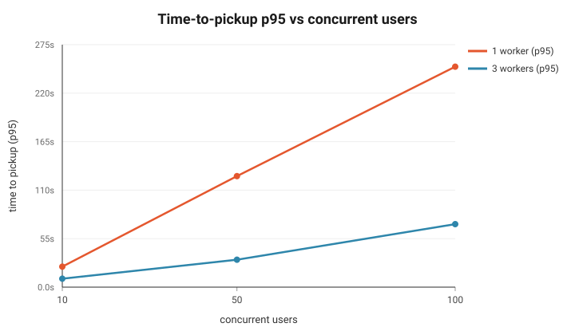
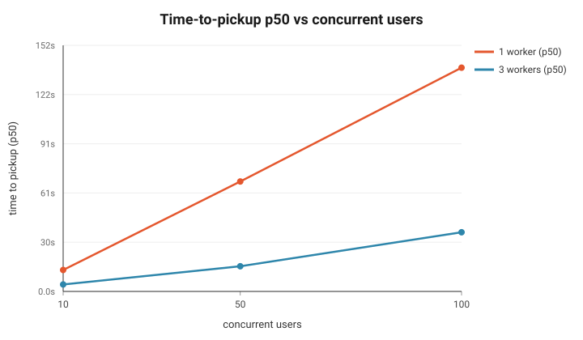
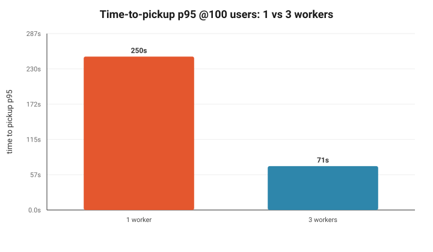
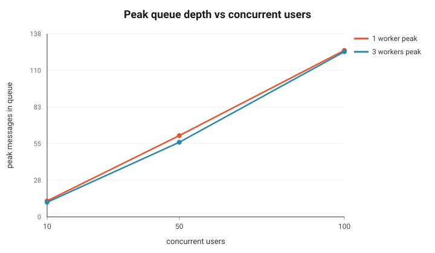
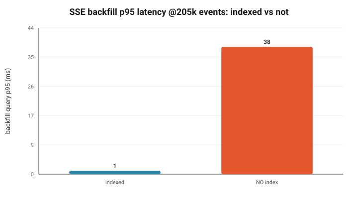
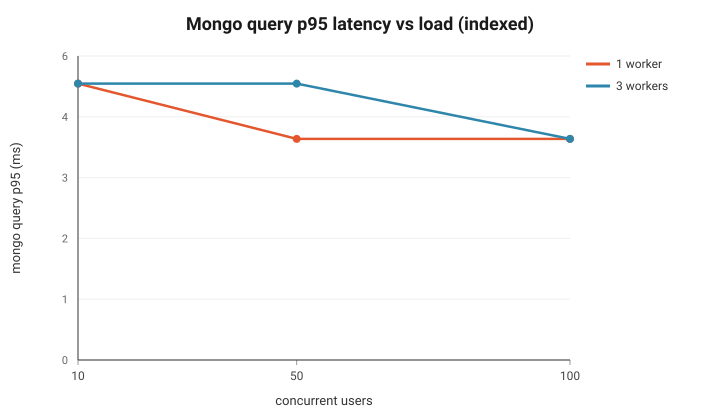

First layer to break: Mongo read latency on the SSE-backfill hot path when the event
collection is not indexed — a ~40× regression (1 ms → 38 ms p95) at 205k events, growing with
total events written. With the shipped indexes, Mongo stays flat at 4–5 ms across all load, and throughput
is exactly
workers × prefetch. The queue/worker layer never saturated. Sandbox cold-start
(~190 ms/miss) is the second-order cost.
100%
runs completed (all cells)
3.5×
pickup speedup, 1→3 workers @100u
~40×
backfill regression w/o index
4–5ms
indexed Mongo p95, any load
Scaling — time-to-pickup




Where it breaks first


Experiment matrix (raw)
| workers | users | completed | pickup p50 | pickup p95 | duration p50 | peak queue | final queue | mongo p95 |
|---|---|---|---|---|---|---|---|---|
| 1 | 10 | 14/14 | 13.2s | 23.2s | 26.1s | 12 | 6 | 5ms |
| 1 | 50 | 64/64 | 67.9s | 125.8s | 132.6s | 61 | 7 | 4ms |
| 1 | 100 | 129/129 | 138.2s | 249.8s | 266.0s | 125 | 4 | 4ms |
| 3 | 10 | 14/14 | 4.3s | 9.6s | 13.1s | 11 | 5 | 5ms |
| 3 | 50 | 64/64 | 15.6s | 31.0s | 30.6s | 56 | 1 | 5ms |
| 3 | 100 | 129/129 | 36.5s | 71.4s | 66.7s | 124 | 10 | 4ms |
Correctness & resilience — all verified
| Property | Result |
|---|---|
| End-to-end flow | events in exact seq order, run marked done ✓ |
| Standalone worker | Dockerfile.worker image processes jobs, no web tier ✓ |
| Sandbox persistence | file from call 1 visible in call 2; released; pool refilled ✓ |
| Per-thread serialization | 3 same-thread jobs / 3 workers: no overlap, no interleave ✓ |
| Worker never idle-blocks | distinct threads ran concurrently while thread busy ✓ |
| Reconnect backfill | resumed at exact seq, no gap/dup, tailed to done ✓ |
| Redis-down fallback | Mongo poll delivered all events; nothing lost ✓ |
| Crash recovery | kill -9 mid-run → reaper requeued → finished ✓ |